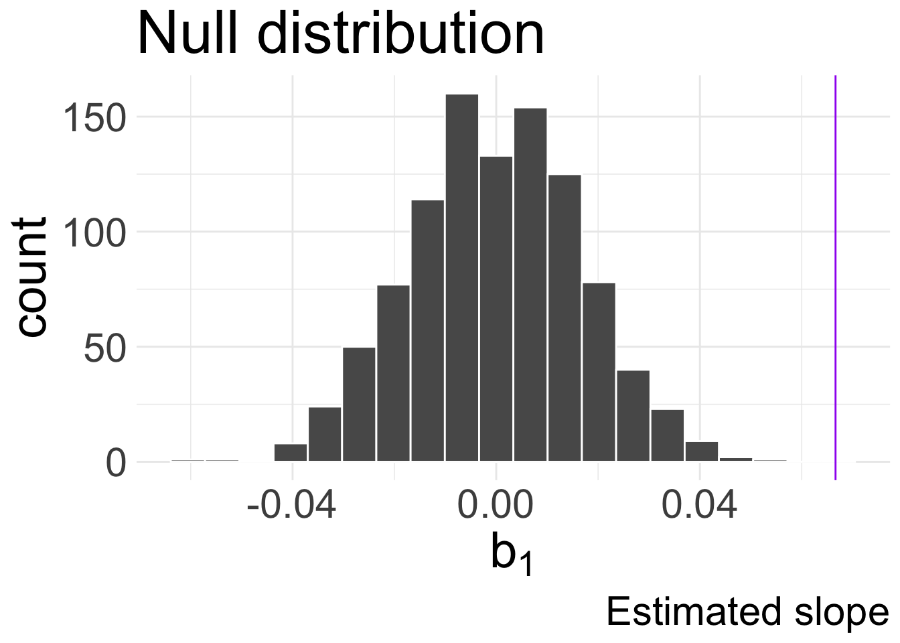

Simulation-based HTs for SLR
Housekeeping
Data for end of class (copy when needed):
library(readr)
birthwt <- read.csv("https://raw.githubusercontent.com/midd-stat201-fall2024/midd-stat201-fall2024.github.io/refs/heads/main/data/birthwt.csv")Office hours changed this week:
- Friday: cancelled, moved to next week before midterm
Homework 8 due tonight
Office hours next week:
Monday 2:00-4:00pm
Tuesday: 11am-12:00pm, 4:00-5:00pm
Simulation-based HT for slope
Recall our hypotheses for the slope: \(H_{0}: \beta_{1} = 0\) versus \(H_{A}: \beta_{1} \neq 0\)
How might we use simulation to test these hypotheses? (i.e. how can we simulate “null world”?)
Under \(H_{0}\), there is no relationship between \(x\) and \(y\), so we can shuffle/permute/break up the \((x_{i}, y_{i})\) under \(H_{0}\)
- i.e. there is no special correspondence between \(x_{i}\) and \(y_{i}\)
Randomization test (demonstration)
Here’s how it would look like using cards. Repeat the following \(B\) times:
Write down all \(x_1,\ldots, x_{n}\) values and all \(y_{1},\ldots, y_{n}\) values on cards.
Shuffle the response variable cards to get \(y_{1}^{shuff}, \ldots, y_{n}^{shuff}\)
Deal out the shuffled responses to pair with an explanatory: \((x_{1}, y_{1}^{shuff}),\ldots, (x_{n}, y_{n}^{shuff})\)
Fit linear regression model to these shuffled data and record \(b_{1}\)
Convince yourself this corresponds to \(H_0: \beta_{1} = 0\)!
We are not sampling with replacement
evals
Let’s return to our evals data and model: \(\text{score} = \beta_{0} + \beta_{1} \text{bty_avg} + \epsilon\)
First six rows of original data:
| course_id | bty_avg | score |
|---|---|---|
| 1 | 5 | 4.7 |
| 2 | 5 | 4.1 |
| 3 | 5 | 3.9 |
| 4 | 5 | 4.8 |
| 5 | 3 | 4.6 |
| 6 | 3 | 4.3 |
First six rows of one iteration of shuffled data:
| course_id | bty_avg | score | score_shuff |
|---|---|---|---|
| 1 | 5 | 4.7 | 4.5 |
| 2 | 5 | 4.1 | 3.9 |
| 3 | 5 | 3.9 | 3.7 |
| 4 | 5 | 4.8 | 3.8 |
| 5 | 3 | 4.6 | 4.7 |
| 6 | 3 | 4.3 | 4.6 |
Your turn!!
\[\text{score} = \beta_{0} + \beta_{1} \text{bty_avg} + \epsilon\]
In groups, obtain the null distribution for this \(H_{0}\) via simulation and visualize it using ggplot with informative title and axis labels. (You could be expected to do something like this for your midterm…)
Suggestion: in a relevant place in your code, use the data frame
evalsto create a new data frame calledevals_nullevals_nullshould have a variable calledscore_shufflethat represents the shuffledscores
evals null distribution
\(H_{0}: \beta_{1} = 0\) (there is no linear relationship between score and bty_avg)
\(H_{A}: \beta_{1} > 0\) (there is a positive linear relationship between score and bty_avg)
p-value
score_lm <- lm(score ~ bty_avg, data = evals)
tidy(score_lm)| term | estimate | std.error | statistic | p.value |
|---|---|---|---|---|
| (Intercept) | 3.880338 | 0.0761430 | 50.961213 | 0.00e+00 |
| bty_avg | 0.066637 | 0.0162912 | 4.090382 | 5.08e-05 |
- Compare our observed fitted \(b_{1,obs} = 0.067\) coefficient to null distribution:

Recall: \(H_{A}: \beta_{1} > 0\)
p-value is calculated as \(\frac{\text{number of simulated } b_{1} > 0.067}{B} = 0\)